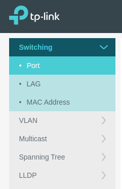

Laboratorio 3. VLAN con tp-link
1. Introducción
En este laboratorio se describen las acciones a realizar para configurar un switch tp-link Modelo T1600G-28TS compartido por los diferentes departamentos de la organización para segmentar la red de los mismos mediante VLANs.
El trabaja a realizar se realizará mediante el emulador del switch.
Figura 1. Emulator tp-link.
2. Escenario
La organización está compuesta de 3 departamentos con equipos conectados a la red en un edificio de 3 plantas con un switch en cada una de las mismas. La subred de la organización es la 192.168.0.0/24.
|
|||||||||
| Figura 2. Esquema de conexionado al switch por departamentos. | Tabla 1. Configuración de los id de las VLAN. |
3. Conectar switch VLAN
|
|
Modelo T1600G-28TS |
-2.0-01_1499759536399a.jpg)
{kind=link}
Para comenzar con la configuración de las VLANs, en la página principal del emulador, hay que pulsar la pestaña 'L2 FEATURES'.
A continuación, hay que pulsar en el panel lateral izquierdo sobre 'VLAN'.

Figura 3. Panel lateral izquierdo del Emulator tp-link.
A continuación, hay que pulsar sobre para crear una nueva configuración. En la ventana que aparece, hay que poner el id y el nombre de la VLAN. Para este caso, se va a configurar la VLAN del departamento de Contabilidad con id 100. Después, en la parte inferior, se configuran los 8 primeros puertos para el departamento de Contabilidad (etiqueta 100).
Cuando se conecta un equipo al puerto Untagged, ese equipo no entiende del etiquetado de los paquetes, por lo que envía los mismos a ese puerto sin etiquetar. Si el switch tiene que enviar el paquete a otro switch, cogerá el paquete y lo etiquetará con el id del puerto por el que ha entrado el paquete (donde está conectado el equipo) y lo enviará mediante el puerto trunk o puerto etiquetado (tagged ports), por lo que todo el tráfico que va por este puerto, va etiquetado.
Si el switch recibe un paquete por el puerto etiquetado, consulta el id y lo reenvía a los puertos con ese id. De esta forma, todo el tráfico broadcast no interfiere de una red con las otras.
Figura 4. Puertos Untagged del tp-link.
El puerto 25 (tagged ports – puerto trunk) es el utilizado para conectar switches que funcionan con vlans.
Ejemplo, si se recibe un paquete identificado con el id 100, entonces el switch lo reenvía a los puertos 1-8 que son los que se han etiquetado con el id 100 (Contabilidad).
Figura 5. Puertos Tagged del tp-link.
En resumen:
- Puertos Untagged: Puertos que no entienden de etiquetado. Estos puertos son así ya que el tráfico que llega a él no está etiquetado, es decir, los puertos seleccionados como untagged reenviarán paquetes sin etiquetar en la VLAN de destino.
- Puertos Tagged: Puertos para interconectar entre switches gestionables o contra un router que es el que gestionará toda la red, ejemplo: En un router microtik, se configuraría un puerto trunk con el etiquetado de las vlans creadas y se conectaría al puerto trunk del switch. Los puertos seleccionados como tagged reenviarán los paquetes etiquetados en la VLAN de destino.
A continuación, hay que establecer las ID's de VLAN predeterminada de los puertos, es decir, el PVID (id por defecto de los puertos del switch) para que todo el tráfico que llegue a los puertos del switch, cuando salgan por el puerto 25 salgan etiquetados con el id que se ponga.
El PVID se utiliza principalmente para que cuando un puerto reciba un paquete sin etiquetar, el switch inserta una etiqueta VLAN en el paquete según el PVID de ese puerto.
Ejemplo: Para el caso del departamento de contabilidad, los puertos del 1 al 8 su PVID sería igual a 100. Con esto lo que se consigue es que, todo el tráfico que llegue a esos 8 puertos, se le va a asignar el PVID 100 y lo enviará al exterior a través del puerto trunk etiquetado como 100.

Figura 6. Configuración de los puertos por defecto PVID.
Un puerto puede pertenecer a varias redes, es decir, suponiendo que un equipo que estaba conectado al puerto 8 (red de contabilidad), ahora se conecta al puerto 10 que es de otra red, hay que configurar el valor del PVID a 100 ya que ese es el id del departamento de contabilidad.
Lo normal es que un puerto solo pertenezca a una red, pero podría pasar que un puerto esté disponible para más de una red.
En el caso del puerto trunk, se puede establecer un PVID para que en el caso de que llegue algún paquete sin etiquetar, lo etiquete con el id que se ha configurado en el PVID del puerto, por ejemplo la 500 que no pertenece a ninguna red. De esa forma, se aísla el tráfico que llega sin etiquetar.
Referencias
Obra publicada con Licencia Creative Commons Reconocimiento No comercial Compartir igual 4.0